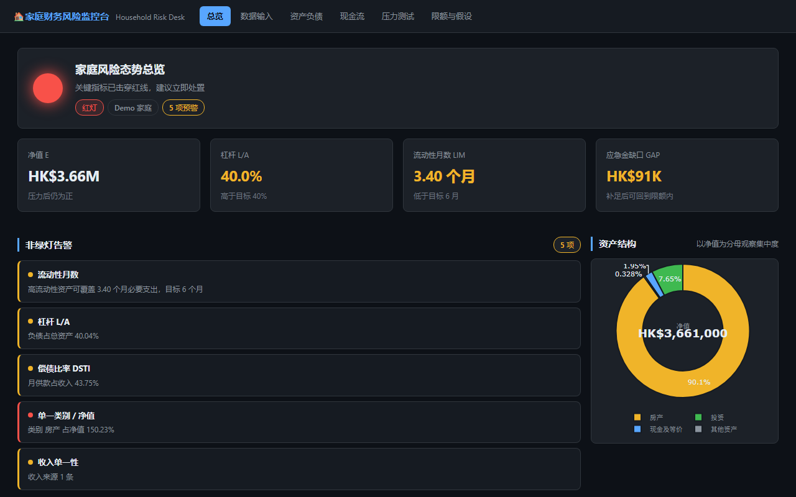
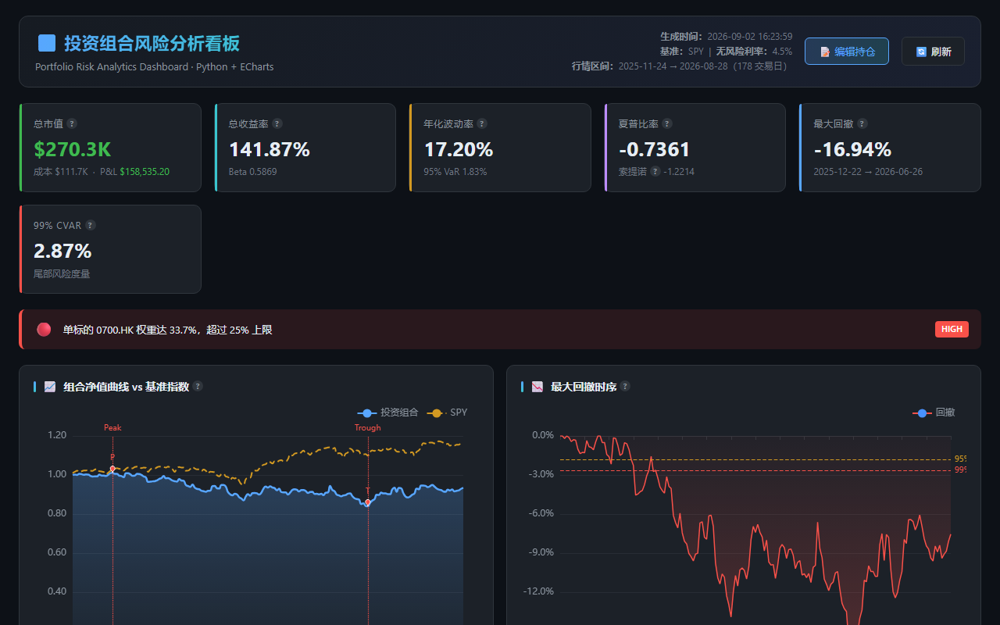

Passed FRM Part I & II. MSc in Information Technology, with 3+ years across fintech and securities. I build risk tools that are actually used — from stress-testing dashboards to AI-driven monitoring systems.
From operations to risk — a deliberate path. FRM Part I & II passed, two risk tools built from scratch, 3+ years making controls work in practice.
I came to risk the deliberate way. Over 3+ years in fintech and securities operations, I worked where risk actually surfaces — closing 300+ defects before release, stopping data inconsistencies before they spread, monitoring anomalies after launch. I then passed FRM Part I & II to formalize the frameworks — market, credit, and operational risk, VaR, stress testing — and built two risk tools from scratch to prove that methodology can ship as working software. Operations grounding + FRM frameworks + self-built risk tools = a risk candidate who can execute, not just analyze.
Risk knowledge first — then the data stack and AI workflow that turn it into working systems.
3+ years across fintech, securities, and research — building risk controls, optimizing data quality, and driving AI-powered operations.
Designed data dashboards for the community-app admin backend and eliminated frontend-backend inconsistencies; fixed 50+ defects across 7 modules before they could propagate.
Ran scenario and compatibility testing across 3 release cycles, driving 300+ defect closures and keeping quality issues out of production.
Built an AI-powered content deployment pipeline and monitored post-launch data to catch anomalies early, cutting manual steps and errors.
Cleaned and standardized multi-modal radiation-oncology data to research-grade accuracy, integrity, and usability.
Contributed to the upgrade of the Big Data Reporting Platform's UI and interaction logic, making it easier for clinical end users to use.
Segmented customers with decision-tree models and launched 8 differentiated outreach scenarios, lifting sales conversion from 13.45% to 22.58%.
Built customer-behavior tracking with the development team for risk-signal detection; mined the FAQ knowledge base to cut AI-to-human transfers by 13%.
Built interactive Tableau dashboards for daily sales data across 11 regions, supporting data-driven performance monitoring.
Handled 80+ data requests with efficient SQL and standardized reporting templates.
Two risk management tools built from scratch — designed, engineered, and deployed as personal projects.

A household liquidity & solvency risk monitoring dashboard. Define risk events → measure current state → set limits → stress test → actionable recommendations. Dual-frontend (HTML + Streamlit) with a shared calculation engine aligned to < 1 HKD precision.

A portfolio risk analysis dashboard with Python data layer + pure static frontend. Computes VaR (historical + parametric), CVaR, Sharpe/Sortino ratios, Beta, Max Drawdown, HHI concentration, and Contribution to Risk — all in-browser real-time calculation with zero backend dependency.
Open to risk management roles in Hong Kong. Feel free to reach out.